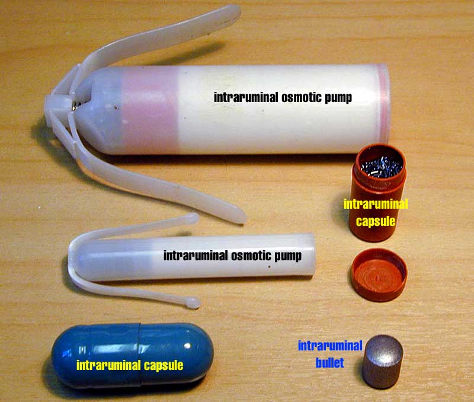

The solubility of the drug is important in determining the rate of drug absorption. Solubility is a function of the molecular structure of the drug and the fluid surrounding it. Solubility can be altered by forming salts of the drug; eg, morphine chloride is more soluble than morphine sulphate and both are much more soluble than morphine base. For weak acids or weak bases the solubility of the drug varies with the drug's pKa and the environmental pH of the medium in which the drug is dissolved. This pH varies from site to site along the gastrointestinal tract and in similar sites between species (the rumen has a pH of about 8.5; the monogastric’s stomach about 1.5). Exercise and inflammation can alter pH at injection sites.
The solubility of drugs might vary from one proprietary preparation to another since the formulations may have different excipients or a different pH. Many drugs are prepared as relatively insoluble salts to ensure a slow absorption and a prolonged effect. Some are suspensions of finely divided particles; these give a sustained release but will block arterioles if injected iv (eg lente insulin).
Formulation of the drug is very important for oral preparations. Some tablets are coated to protect them from acid in the stomach; they then dissolve in the intestine where the pH is completely different. The particle size will affect the rate of dissolution (bigger is slower), the excipient (often lactose) will affect how quickly the tablet breaks up. An extreme example is trace element supplements for ruminants, where the excipient is sometimes glass!
Some drugs are practically insoluble in water and are dissolved in lipid emulsions or other vehicles for injection. Some of these vehicles can be dangerous in some species, eg, polyethoxylated castor oil will cause massive histamine release in dogs (the same thing can happen in other species, but the risk is acceptably low). Oily injection diluents can act as depots from which the drug is slowly leached. The lipid solubility of the drug and the nature of the oil determine the absorption. Waxes are often used for situations such as dry cow intramammary preparations where a slow release of drug is required (typically 30 days). Where extremely slow absorption is required (100 days), such as growth promoting hormone implants, silicone rubber is used. A variety of plastics are used for intravaginal delivery of hormones in cattle and sheep, these implants usually have a string attached and are pulled out when they have finished delivering the drug.
Mechanical devices such as osmotic pumps are occasionally used. These are capsules containing a compartment with a hypertonic solution and a semipermeable membrane open to the ECF. As fluid diffuses across the membrane the hypertonic compartment expands, pushing the drug out of the other end of the device. These give accurate drug delivery which can act over several months but are expensive. Similar pumps are used for slow delivery in the rumen of oral drugs such as anthelmintics and trace elements.
Implanting devices to release a drug a a precise rate in the right place is likely to increase in the future; pumps with electric motors are increasingly being used in people for insulin administration and have been tried in cattle for hormone manipulation.
Drugs for intravenous injection bypass the dissolution process so they must already be dissolved in water, or in a form which will quickly dissolve once injected. Relatively fat soluble drugs are usually in the form of an emulsion, so the drug is at least miscible with the plasma. Emulsifiers used like this can often cause side effects.
Drugs which are not in solution or in an emulsion of some sort should not be given iv.
Slow release intraruminal drug delivery devices.